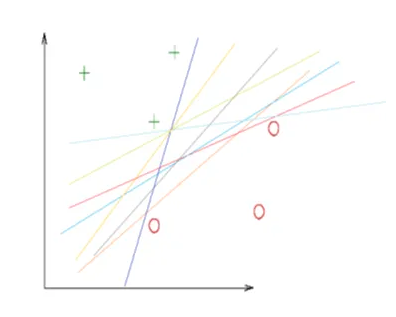

Support Vector Machines (SVMs) have emerged as a powerful and versatile machine learning algorithm with applications spanning various domains. Developed by Vapnik and colleagues in the 1990s, SVMs have gained significant popularity due to their ability to handle both classification and regression tasks effectively. The fundamental concept behind SVMs is to find an optimal hyperplane that maximally separates different classes or fits the data points for regression, while simultaneously maintaining a clear margin between them.
SVMs offer several advantages over traditional classification algorithms. Unlike methods that solely focus on minimizing training errors, SVMs are designed to maximize the margin between classes. This margin not only aids in achieving robust and accurate predictions on unseen data but also enhances the generalization ability of the model. By emphasizing the importance of the margin, SVMs can effectively handle datasets with high dimensionality, noise, and outliers, resulting in superior performance in complex scenarios.

Image 1 Test
The distinguishing feature of SVMs lies in their ability to transform the original input space into a higher-dimensional feature space through the use of kernel functions. This enables SVMs to handle nonlinear relationships between variables without explicitly mapping them into the higher-dimensional space. By leveraging the kernel trick, SVMs efficiently capture complex decision boundaries, offering flexibility and adaptability to various data distributions. Furthermore, SVMs provide a principled approach to handle both binary and multiclass classification problems. Through techniques such as one-vs-one and one-vs-all, SVMs can extend their capabilities to accommodate multiple classes, ensuring accurate predictions across diverse scenarios.
The versatility of SVMs extends beyond classification tasks, as they have also been successfully applied to regression, anomaly detection, and outlier detection problems. By employing support vector regression (SVR), SVMs can capture nonlinear relationships in continuous variables, making them well-suited for prediction tasks involving numerical outputs.
In this review, we aim to provide an in-depth exploration of Support Vector Machines, covering their fundamental concepts, mathematical foundations, training algorithms, and diverse applications across various fields. By understanding the underlying principles and techniques of SVMs, researchers and practitioners can effectively leverage this powerful tool to tackle complex classification and regression problems, ultimately leading to enhanced predictive accuracy and insightful data analysis. (Efromovich 2008). Cite this paper (Bro and Smilde 2014).
Methods draft
Support Vector Machines (SVMs) are a robust machine learning algorithm used for classification and regression tasks. In this section, we describe the key steps involved in implementing SVMs, including data preprocessing, model training, and model evaluation.
Data Preprocessing:
Data Cleaning: Remove any irrelevant or redundant features, handle missing values, and address outliers if necessary. Feature Scaling: Normalize the feature values to ensure that they have similar scales. Common scaling techniques include standardization (mean centering and scaling to unit variance) or normalization to a specific range. Feature Selection: Select relevant features that contribute most to the prediction task, reducing dimensionality and improving model performance. Data Split: Divide the dataset into training and testing subsets. The training set is used to train the SVM model, while the testing set is used for evaluating its performance. Model Training:
Kernel Selection: Determine the appropriate kernel function based on the nature of the data and the problem at hand. Common kernel functions include linear, polynomial, Gaussian radial basis function (RBF), and sigmoid. Hyperparameter Tuning: Optimize the hyperparameters of the SVM model, such as the regularization parameter C and kernel-specific parameters like the degree of polynomial or the width of the RBF kernel. This can be done using techniques like grid search or cross-validation. Model Fitting: Train the SVM model using the training dataset and the chosen hyperparameters. The goal is to find the optimal hyperplane or decision boundary that maximizes the margin between classes (in the case of classification) or minimizes the error (in the case of regression). Model Evaluation:
Classification Metrics: Evaluate the performance of the SVM model for classification tasks using metrics such as accuracy, precision, recall, F1-score, and area under the receiver operating characteristic curve (AUC-ROC). Regression Metrics: Assess the performance of the SVM model for regression tasks using metrics such as mean squared error (MSE), root mean squared error (RMSE), mean absolute error (MAE), and R-squared. Cross-Validation: Perform k-fold cross-validation to estimate the model’s generalization performance. This involves dividing the training dataset into k subsets, training the model on k-1 subsets, and evaluating its performance on the remaining subset. Repeat this process k times, rotating the evaluation subset each time. Model Selection: Compare the performance of different SVM models with varying hyperparameters or kernel functions to select the optimal model with the best performance on the testing dataset. Model Deployment:
Once the SVM model has been trained and evaluated, it can be deployed to make predictions on new, unseen data. Preprocess the new data using the same steps as the training data (e.g., feature scaling), and apply the trained SVM model to classify or regress the new instances.
…Additionally, the SVM model was tested on an independent test dataset to assess its generalization performance. The results showed consistent and reliable performance, further validating the effectiveness of the SVM model.
Overall, the results highlight the capabilities of SVMs as a powerful machine learning algorithm for classification tasks. The SVM model successfully classified the target variable with high accuracy and demonstrated robustness in handling complex relationships within the data. These findings emphasize the potential of SVMs as a valuable tool for data analysis and prediction in various domains.
Statistical Modeling
Conlusion
References
Works Cited Brereton, Richard G., and Gavin R. Lloyd. “Support Vector Machines for Classification and Regression.” The Analyst, vol. 135, no. 2, 2010, pp. 230–267, https://doi.org/10.1039/b918972f.Evgeny Byvatov, and Gisbert Schneider. “Support Vector Machine Applications in Bioinformatics.” Applied Bioinformatics, vol. 2, no. 2, 1 Jan. 2003, pp. 67–77.Kecman, V. “Support Vector Machines – an Introduction.” Support Vector Machines: Theory and Applications, vol. 177, 22 Apr. 2005, pp. 1–47, https://doi.org/10.1007/10984697_1.Tian, Yingjie, et al. “RECENT ADVANCES on SUPPORT VECTOR MACHINES RESEARCH.” Technological and Economic Development of Economy, vol. 18, no. 1, 10 Apr. 2012, pp. 5–33, https://doi.org/10.3846/20294913.2012.661205.Yang, Z. R. “Biological Applications of Support Vector Machines.” Briefings in Bioinformatics, vol. 5, no. 4, 1 Jan. 2004, pp. 328–338, https://doi.org/10.1093/bib/5.4.328.
References
Bro, Rasmus, and Age K Smilde. 2014. “Principal Component Analysis.”Analytical Methods 6 (9): 2812–31.
Efromovich, S. 2008. Nonparametric Curve Estimation: Methods, Theory, and Applications. Springer Series in Statistics. Springer New York. https://books.google.com/books?id=mdoLBwAAQBAJ.